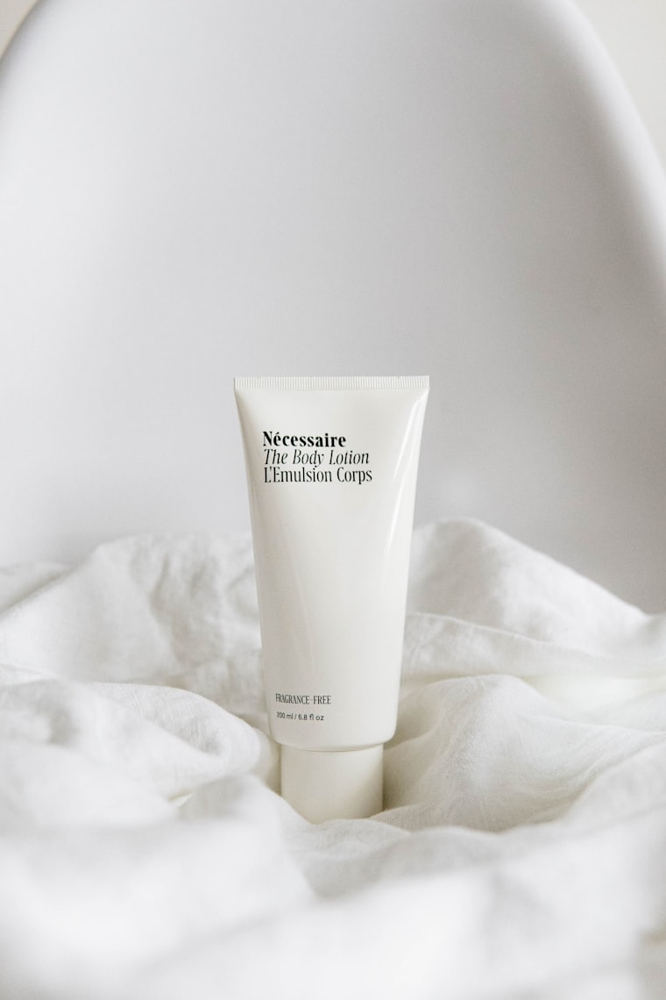

เลเซอร์หน้าใส
ลดรอยแดง รูขุมขนกระชับ ทำแล้วกลับไปทำงานต่อได้
4 ครั้ง · ห่างกัน 2 สัปดาห์
- เวลาต่อครั้ง
- 45 นาที
- พักฟื้น
- หน้าแดง 2–3 ชม.
- ราคา
- ฿1,900 / ครั้ง
คลินิกผิวพรรณทองหล่อ ซอย xx
แพทย์เฉพาะทางดูแลทุกเคส ประเมินสภาพผิวฟรีก่อนเริ่มทุกโปรแกรม
4.9 จาก 860 รีวิว แพทย์ผิวหนังประจำคลินิก จอดรถฟรี 2 ชม.
โปรแกรมยอดนิยม
ทุกโปรแกรมแจ้งราคาชัดก่อนทำ ไม่มีขายคอร์สหน้างาน
ลดรอยแดง รูขุมขนกระชับ ทำแล้วกลับไปทำงานต่อได้
4 ครั้ง · ห่างกัน 2 สัปดาห์
กดสิว + ยาเฉพาะจุด คุมมันได้จริงใน 3 ครั้ง
3 ครั้ง · ห่างกัน 1 สัปดาห์

ฟิลเลอร์แท้ มีใบรับรอง เปิดกล่องต่อหน้า
ครั้งเดียว · อยู่ได้ 9–12 เดือน
เทียบก่อนตัดสินใจ
ตัวเลขจากเคสทั่วไป — แพทย์จะประเมินหน้างานอีกครั้ง บางผิวใช้น้อยกว่านี้
| โปรแกรม | แก้ปัญหา | จำนวนครั้ง | เวลาต่อครั้ง | พักฟื้น | ราคา |
|---|---|---|---|---|---|
| เลเซอร์หน้าใส | รูขุมขนกว้าง ผิวหมองคล้ำ | 4 ครั้ง ห่างกัน 2 สัปดาห์ | 45 นาที | ไม่ต้องพักฟื้น หน้าแดง 2-3 ชม. | ฿1,900 / ครั้ง |
| ทรีตเมนต์ลดสิว | สิวอุดตัน สิวอักเสบ | 3 ครั้ง ห่างกัน 1 สัปดาห์ | 60 นาที | ไม่ต้องพักฟื้น | ฿1,290 / ครั้ง |
| ฟิลเลอร์ร่องแก้ม | ร่องแก้มลึก ใบหน้าดูโทรม | ครั้งเดียว อยู่ได้ 9-12 เดือน | 30 นาที | บวมช้ำได้ 3-5 วัน | ฿9,900 / ซีซี |
ราคาทุกบริการ
ราคานี้คือราคาที่จ่ายจริง รวมค่าแพทย์และค่ายาชาแล้ว ไม่มีบวกเพิ่มหน้าเคาน์เตอร์
| บริการ | ราคาต่อครั้ง | แพ็กเกจคอร์ส | เหมาะกับใคร |
|---|---|---|---|
| ปรึกษาแพทย์ + ตรวจผิว | ฟรี | — | มาครั้งแรก ยังไม่รู้ว่าควรทำอะไร |
| เลเซอร์หน้าใส | ฿1,900 | 5 ครั้ง ฿7,900 | รอยแดง รูขุมขนกว้าง ผิวหมองคล้ำ |
| ทรีตเมนต์ลดสิว | ฿1,290 | 3 ครั้ง ฿3,400 | สิวอุดตัน สิวอักเสบ หน้ามัน |
| เลเซอร์ลดรอยสิว (พิโคเลเซอร์) | ฿3,500 | 5 ครั้ง ฿14,900 | รอยดำรอยแดงหลังสิวยุบ |
| โบท็อกซ์ลดริ้วรอย | ฿90 / ยูนิต | หน้าผาก 20 ยูนิต ฿1,700 | ริ้วรอยหน้าผาก หางตา ขมวดคิ้ว |
| ฟิลเลอร์ร่องแก้ม | ฿9,900 / ซีซี | 2 ซีซี ฿18,900 | ร่องแก้มลึก ใต้ตาคล้ำเป็นร่อง |
| ร้อยไหมยกกระชับ | ฿990 / เส้น | 10 เส้น ฿8,900 | แก้มหย่อน เหนียงใต้คาง |
| IPL กำจัดขนถาวร (รักแร้) | ฿890 | 6 ครั้ง ฿4,500 | ขนดก ขนคุด รอยดำจากการโกน |
| ทรีตเมนต์บำรุงผิวหน้า | ฿790 | 10 ครั้ง ฿6,900 | ผิวแห้ง อยากบำรุงต่อเนื่องรายเดือน |
มาถึงแล้วเจออะไร
ก่อนทำ · หลังทำ
พยาบาลจะทวนให้ฟังอีกครั้งหน้างาน แต่อ่านไว้ก่อนได้ จะได้วางแผนวันที่มาถูก
แพทย์ผิวหนังประจำคลินิกทุกวัน ประเมินผิวให้ก่อน แล้วค่อยตัดสินใจว่าจะทำหรือไม่ทำ
ที่ตั้ง
อยู่ฝั่งเดียวกับร้านกาแฟ ขึ้นลิฟต์ชั้น 3 ไม่ต้องผ่านล็อบบี้โรงแรม
ผลลัพธ์ตามจริง
ตัวเลขข้างล่างคือค่าเฉลี่ยจากคนไข้จริงของคลินิก ไม่ใช่คำโฆษณา — บางคนเร็วกว่า บางคนช้ากว่า แพทย์จะบอกให้ตั้งแต่วันประเมิน
| หัตถการ | เริ่มเห็นผล | ผลเต็มที่ | ทำซ้ำเมื่อไหร่ |
|---|---|---|---|
| เลเซอร์หน้าใส | หลังครั้งแรก 3–5 วัน | ครั้งที่ 3–5 | ทุก 4 สัปดาห์ |
| ทรีตเมนต์ลดสิว | 7–10 วัน | ครั้งที่ 3 | ทุก 1 สัปดาห์ ช่วงแรก |
| โบท็อกซ์ | 3–5 วัน | 14 วัน | ทุก 4–6 เดือน |
| ฟิลเลอร์ | ทันทีหลังฉีด | หลังยุบบวม 7 วัน | ทุก 9–12 เดือน |
| ร้อยไหม | ทันที (ยกขึ้นทางกล) | 4–6 สัปดาห์ | ทุก 12 เดือน |
| IPL กำจัดขน | หลังครั้งที่ 2 | ครั้งที่ 6 | เก็บปีละ 1–2 ครั้ง |
ความปลอดภัย
เรื่องที่คลินิกส่วนใหญ่ไม่พูดถึง แต่เป็นสิ่งที่ทำให้ราคาต่างกันจริงๆ
เสียงจากคนไข้
★★★★★
ชอบที่หมอบอกตรงๆ ว่าอันไหนยังไม่ต้องทำ ไม่ได้ขายคอร์สตั้งแต่วันแรก
★★★★★
สิวอักเสบหายภายในเดือนเดียว ที่สำคัญคือมีคนตอบไลน์ตอนกลางคืนตอนที่กังวล
★★★★☆
คิวแน่นช่วงเย็น ต้องจองล่วงหน้า แต่ถึงคิวแล้วไม่รู้สึกว่าถูกเร่ง
คำถามที่พบบ่อย
ไม่บวก ราคาที่คุยก่อนทำคือราคาที่จ่าย ถ้าต้องเพิ่มอะไรจะถามก่อนเสมอ
เลเซอร์หน้าใสรู้สึกอุ่นๆ กลับไปทำงานต่อได้เลย ฟิลเลอร์อาจบวมเล็กน้อย 1-2 วัน
เปิดกล่องต่อหน้าคนไข้ทุกครั้ง มีเลขล็อตให้ถ่ายรูปเก็บไว้ได้
จริง แพทย์ผิวหนังอยู่ประจำทุกวันทำการ ไม่มีเคสไหนที่พนักงานขายเป็นคนประเมิน